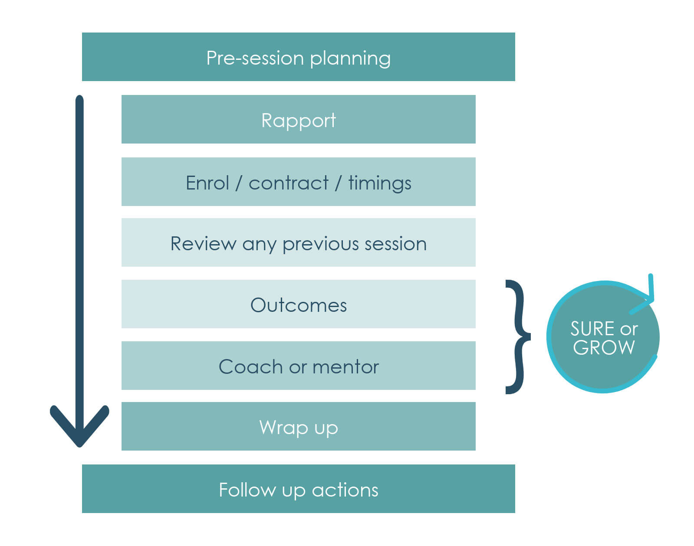

Planning, structuring and monitoring coaching and mentoring interventions
1 Introduction
Without structure to coaching and mentoring, it could become just a ‘nice chat’ instead of a focused intervention to improve work performance. Consequently, it is necessary to have a way of structuring coaching or mentoring to make it fully productive. One such model is set out below:
Rapport
Rapport needs to be established quickly as without it any coaching or mentoring intervention will be superficial at best. It is unlikely that a client will engage with someone that he or she does not trust or relate well to, particularly as improvement in performance invariably requires admission of weaknesses. Understandably, few of us are happy to reveal weaknesses to someone we do not trust.
Engage/contract/timings
Engaging the client in the process is about agreeing how you will approach the coaching or mentoring, setting out the parameters you are working to and getting commitment to the process. Contracting is about boundaries. Issues such as confidentiality will be significant as are the limits to what you will discuss. For example, you might agree that you will not discuss anything that is said with anyone else and that you will confine your discussions to work matters. It may only be necessary to set this out in the first session. It is worth agreeing what time you each have for the session as you would not want to have to interrupt discussion of important issues midway through.
Review of any previous session
Review is something you can ask the client to provide so that it quickly gets their mind focused on the session and the progress made since the last time.
Outcomes and coach/mentor
Outcomes are what you agree you will look to achieve in the coaching or mentoring, in other words what are the goals for this session, what will you look at? This should ideally be the client’s agenda. But if you are applying coaching or mentoring in the workplace then you will sometimes have a ‘presenting issue’ a problem that is brought to you perhaps from a more senior person for you to resolve with your client. Then you would move to undertake the session with facilitative dialogue and this part of the session should itself be structured. That, in the above diagram, is why the SURE acronym is against these two elements. SURE is a model for structuring the coaching itself.
Wrap up
This is where you would round off the session, confirm the actions agreed and set or confirm a date for the next session.